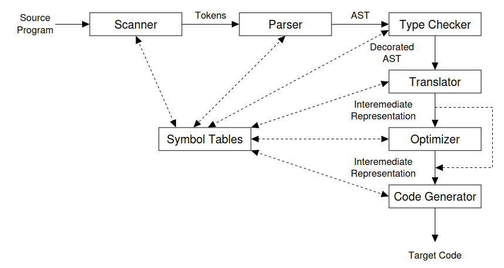

Compilers
Overview
The compiler must preserve the meaning of the program being compiled.
The compiler must improve the input program in some discernible way.
- Compiler: translates a program written in one programming language into a program written in another programming language
- Has front and back end
- A compiler consists of different phases where each phase might consist of multiple passes
- Phase = coarse building block (lexing phase, parsing phase, semantic analysis phase, \(\dots\))
- Pass = fine grained iteration inside a phase: syntax lowering pass, scope resolution pass, type checking pass, \(\dots\)

- Frontend deals with with source language, while the backend deals with the target language
- Both are connected using (often more than one) intermediate representation (IR), which is independent from either language
- Between those two, there is often one or many optimization phases
- An optimizer can have different goals:
- Make the program faster
- Make the program smaller
- Make the program use less energy
- Since front and back end are decoupled, it’s easy to write different back ends for different target machines
- A compiler that translates between two programming languages, instead of machine code, is called source-to-source translator
- An interpreter produces as output the result of executing the program, instead of machine code
- Some languages use both a compiler and an interpreter: Java
- Java is compiled into bytecode, which is a compact description of the program
- The bytecode is then interpreted by the JVM (Java Virtual Machine)
- But the JVM also includes a just-in-time (JIT) compiler, which is a runtime compiler
Why study compiler construction?
- A compiler applies many concepts of computer science and software engineering
- Greedy algorithms (register allocation)
- Heuristic search techniques (list scheduling)
- Graph algorithms (dead-code elimination)
- Dynamic programming (instruction selection)
- Finite automata and push-down automata (scanning and parsing)
- Fixed-point algorithms (data-flow analysis)
- It deals with problems such as dynamic allocation, synchronization, naming, locality, memory hierarchy management and pipeline scheduling
Scanner
- Can also be called: Lexer or Tokenizer
- Can be built using a lexer generator like JFlex#
position := initial + rate * 60;
// Tokens
id position
assign :=
id initial
op +
id rate
op *
int 60
semicolon- Tokens: identifiers, constants, operators, \(\dots\)
- Also: Removal of comments/whitespace, preparation of output listing (line numbers, correspondence of error messages and line numbers), communication with symbol table
Parsing
- Are based on CFGs (context-free grammars)
- Reads tokens and groups them into phrases/sentences according to the syntax specification
- Can work top-down or bottom-up
Recursive Descent
- Form of top-down parsing
- Consists of mutually recursive parsing routines which descend through a derivation tree
- Each nonterminal has a corresponding parsing procedure
Grammar example:
Stmt -> id assign Val Expr
Stmt -> print idRecursive-descent parsing procedure for Stmt:
function Stmt() {
if (current() == ID) {
match(ID);
match(ASSIGN);
// Call parsing routines for Val and Expr
Val();
Expr();
} else if (current() == PRINT) {
match(PRINT);
match(ID);
} else {
throw Error;
}
}TODO: Move scanning and parsing into own notes TODO: Link AST and IR notes
References
- Engineering a Compiler (2nd edition) by K. Cooper and L. Torczon
- Crafting A Compiler by Fischer et al.
- Compilers timeline